2. 基础知识
在本章中，我们将介绍Web编程的基础知识。其主要目标是在使用特定语言和环境进行实践应用之前，先介绍Web编程的关键原则。本章包含大量示例，建议您亲自测试这些示例，以便逐步“领悟”Web开发的理念。
2.1. Web 应用程序的组成部分
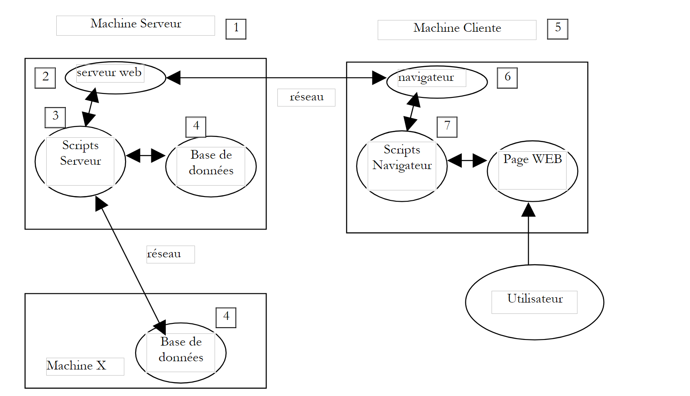 |
编号 | 角色 | 常见示例 |
服务器操作系统 | Linux、Windows | |
Web 服务器 | Apache (Linux, Windows) IIS (NT)，PWS (Win9x) | |
服务器端脚本。它们可以由服务器模块执行 或服务器外部的程序（CGI）执行。 | PERL（Apache、IIS、PWS） VBSCRIPT（IIS、PWS） JAVASCRIPT（IIS、PWS） PHP（Apache、IIS、PWS） Java (Apache、IIS、PWS) C#、VB.NET (IIS) | |
数据库——可以部署在同一台机器上 ，也可通过互联网部署在另一台机器上。 | Oracle（Linux、Windows） MySQL（Linux、Windows） Access（Windows） SQL Server（Windows） | |
客户端操作系统 | Linux、Windows | |
网页浏览器 | 网景、Internet Explorer | |
在浏览器内客户端执行的脚本。 这些脚本无法访问客户端计算机的磁盘。 | VBScript (IE) JavaScript (IE、Netscape) PerlScript (IE) Java小程序 |
2.2. Web 应用程序中通过表单进行数据交换
 |
数字 | 角色 |
浏览器首次请求该 URL（http://machine/url）。未传递任何参数。 | |
Web 服务器发送该 URL 对应的网页。该网页可能是静态的，也可能是由服务器端脚本 (SA) 动态生成的，该脚本可能使用了来自数据库 (SB, SC) 的内容。在此，脚本将检测到该 URL 是被无参数请求的，并生成初始网页。 浏览器接收该页面并将其显示出来（CA）。浏览器端的脚本（CB）可能会修改服务器发送的初始页面。随后，通过用户（CD）与脚本（CB）之间的交互，网页内容将发生变化。特别是，表单将被填写。 | |
用户提交表单数据，这些数据随后必须发送至Web服务器。浏览器根据需要请求初始URL或其他URL，并同时将表单值传输至服务器。为此可使用两种方法：GET和POST。收到客户端请求后，服务器将触发与该URL关联的脚本（SA），该脚本会检测参数并进行处理。 | |
服务器返回由程序（SA、SB、SC）生成的网页。此步骤与前面的步骤 2 完全相同。通信现在按照步骤 2 和 3 进行。 |
2.3. 相关资源
以下是关于安装和使用某些 Web 开发工具的资源列表。附录中提供了安装这些工具的指导。
- 《Apache：安装与实现》，O'Reilly出版社 | |
- 《Perl编程》，拉里·沃尔，O'Reilly - 《Perl CGI 应用》，Neuss 和 Vromans 著，O'Reilly 出版 - Active Perl 随附的 HTML 文档 | |
- 《PHP Web 编程》，Lacroix 著，Eyrolles 出版社 - PHP 用户手册可在 PHP 官网上获取 | |
- 《WinNT 环境下 Web 与数据库的接口》，Alex Homer 著，Eyrolles 出版社 | |
- 《Java Servlets》，作者：Jason Hunter，O'Reilly出版社 - 《Java网络编程》，埃利奥特·鲁斯蒂·哈罗德，O'Reilly - 《JDBC与Java》，乔治·里斯，O'Reilly出版社 | |
- MySQL 手册可在 MySQL 网站上获取 - 《Linux 上的 Oracle 8i》，Gilles Briard 著，Eyrolles 出版社 - 《NT 上的 Oracle 8i》，Gilles Briard 著，Eyrolles 出版社 |
2.4. 符号说明
下文将假设已安装若干工具，并采用以下符号：
符号 | 含义 |
Apache 服务器目录树的根目录 | |
Apache 提供的网页的根目录。网页必须位于此根目录之下。因此，URL http://localhost/page1.htm 对应于文件 <apache-DocumentRoot>\page1.htm。 | |
与 cgi-bin 别名关联的目录树的根目录，Apache 的 CGI 脚本可放置于此。因此，URL http://localhost/cgi-bin/test1.pl 对应于文件 <apache-cgi-bin>\test1.pl。 | |
PWS 提供的网页的根目录。网页必须位于此根目录下。因此，URL http://localhost/page1.htm 对应于文件 <pws-DocumentRoot>\page1.htm。 | |
Perl 目录树的根目录。perl.exe 可执行文件通常位于 <perl>\bin 目录下。 | |
PHP 语言目录树的根目录。可执行文件 php.exe 通常位于 <php> 目录下。 | |
Java 目录树的根目录。与 Java 相关的可执行文件位于 <java>\bin 中。 | |
Tomcat 服务器的根目录。Servlet 示例位于 <tomcat>\webapps\examples\servlets，JSP 页面示例位于 <tomcat>\webapps\examples\jsp |
关于这些工具，请参阅附录，其中提供了安装说明。
2.5. 静态网页、动态网页
静态页面由一个 HTML 文件表示。而动态页面则是由 Web 服务器“即时”生成的。在本节中，我们将通过使用不同的 Web 服务器和编程语言进行各种测试，以展示 Web 概念的普适性。
2.5.1. 静态 HTML（超文本标记语言）页面
请看以下 HTML 代码：
<html>
<head>
<title>essai 1 : une page statique</title>
</head>
<body>
<center>
<h1>Une page statique...</h1>
</body>
</html>
这将生成以下网页：
测试

test1
- 启动 Apache 服务器
- 将 test1.html 脚本放置在 <apache-DocumentRoot> 目录下
- 在浏览器中打开网址 http://localhost/essai1.html
- 停止 Apache 服务器
test2
- 启动 PWS 服务器
- 将脚本 test1.html 放置在 <pws-DocumentRoot> 中
- 在浏览器中访问 URL http://localhost/essai1.html
2.5.2. 一个 ASP（Active Server Pages）页面
test2.asp 脚本：
<html>
<head>
<title>essai 1 : une page asp</title>
</head>
<body>
<center>
<h1>Une page asp générée dynamiquement par le serveur PWS</h1>
<h2>Il est <% =time %></h2>
<br>
A chaque fois que vous rafraîchissez la page, l'heure change.
</body>
</html>
会生成以下网页：

测试
- 启动 PWS 服务器
- 将 essai2.asp 脚本放置在 <pws-DocumentRoot> 目录下
- 使用浏览器访问 URL http://localhost/essai2.asp
2.5.3. 一个 PERL（实用提取与报告语言）脚本
essai3.pl 脚本：
#!d:\perl\bin\perl.exe
($secondes,$minutes,$heure)=localtime(time);
print <<HTML
Content-type: text/html
<html>
<head>
<title>essai 1 : un script Perl</title>
</head>
<body>
<center>
<h1>Une page générée dynamiquement par un script Perl</h1>
<h2>Il est $heure:$minutes:$secondes</h2>
<br>
A chaque fois que vous rafraîchissez la page, l'heure change.
</body>
</html>
HTML
;
第一行是 perl.exe 可执行文件的路径。如有必要，请进行调整。该脚本经 Web 服务器执行后，将生成以下页面：

测试
- Web 服务器：Apache
- 作为参考，请查看 <apache>\confs 目录下的 srm.conf 或 httpd.conf 配置文件（具体取决于您的 Apache 版本），查找提及 cgi-bin 的行，以确定应放置 essai3.pl 的 <apache-cgi-bin> 目录。
- 将 essai3.pl 脚本放置在 <apache-cgi-bin> 目录中
- 访问 URL http://localhost/cgi-bin/essai3.pl
请注意，Perl 页面的加载时间比 ASP 页面更长。这是因为 Perl 脚本由 Perl 解释器执行，而该解释器必须在运行脚本之前先被加载。它不会永久驻留在内存中。
2.5.4. 一个 PHP（个人主页，超文本处理器）脚本
essai4.php 脚本
<html>
<head>
<title>essai 4 : une page php</title>
</head>
<body>
<center>
<h1>Une page PHP générée dynamiquement</h1>
<h2>
<?
$maintenant=time();
echo date("j/m/y, h:i:s",$maintenant);
?>
</h2>
<br>
A chaque fois que vous rafraîchissez la page, l'heure change.
</body>
</html>
上述脚本生成了以下网页：
测试


-
请检查位于 <Apache>\confs 目录下的 srm.conf 配置文件或 Apache 的 httpd.conf 文件
-
作为参考，请检查 PHP 配置行
test1
-
启动 Apache 服务器
-
将 essai4.php 放置在 <apache-DocumentRoot> 目录下
-
访问 URL http://localhost/essai4.php
test2
-
启动 PWS 服务器
-
如需参考，请查看 PWS 中关于 PHP 的配置
-
将 essai4.php 放置在 <pws-DocumentRoot>\php 目录下
-
访问 URL http://localhost/essai4.php
2.5.5. 一个 JSP（Java Server Pages）脚本
heure.jsp 脚本
<% //programme Java affichant l'heure %>
<%@ page import="java.util.*" %>
<%
// code JAVA pour calculer l'heure
Calendar calendrier=Calendar.getInstance();
int heures=calendrier.get(Calendar.HOUR_OF_DAY);
int minutes=calendrier.get(Calendar.MINUTE);
int secondes=calendrier.get(Calendar.SECOND);
// heures, minutes, secondes sont des variables globales
// qui pourront être utilisées dans le code HTML
%>
<% // code HTML %>
<html>
<head>
<title>Page JSP affichant l'heure</title>
</head>
<body>
<center>
<h1>Une page JSP générée dynamiquement</h1>
<h2>Il est <%=heures%>:<%=minutes%>:<%=secondes%></h2>
<br>
<h3>A chaque fois que vous rechargez la page, l'heure change</h3>
</body>
</html>
该脚本由 Web 服务器执行后，将生成以下页面：
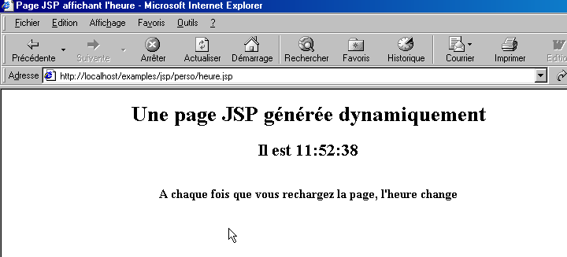
测试
- 将 heure.jsp 脚本放置在 <tomcat>\jakarta-tomcat\webapps\examples\jsp（Tomcat 3.x）或 <tomcat>\webapps\examples\jsp（Tomcat 4.x）目录下
- 启动 Tomcat 服务器
- 访问 URL http://localhost:8080/examples/jsp/heure.jsp
2.5.6. 结论
前面的示例表明：
- HTML 页面可以由程序动态生成。这正是 Web 编程的精髓所在。
- 所使用的语言和 Web 服务器可能各不相同。目前，主要趋势如下：
- Apache/PHP（Windows、Linux）和 IIS/PHP（Windows）的组合
- Windows 平台上的 ASP.NET 技术，该技术将 IIS 服务器与 .NET 语言（如 C#、VB.NET 等）相结合
- 在各种服务器（Tomcat、Apache、IIS）和各种平台（Windows、Linux）上运行的 Java Servlet 技术和 JSP 页面。本文将重点详细讨论后一种技术。
2.6. 浏览器端脚本
HTML 页面可以包含由浏览器执行的脚本。存在多种浏览器端脚本语言，以下列举几种：
语言 | 支持的浏览器 |
VBScript | IE |
JavaScript | IE、Netscape |
PerlScript | IE |
Java | IE、Netscape |
让我们来看几个例子。
2.6.1. 一个包含 VBScript 脚本的网页，在浏览器端
vbs1.html 页面
<html>
<head>
<title>essai : une page web avec un script vb</title>
<script language="vbscript">
function reagir
alert "Vous avez cliqué sur le bouton OK"
end function
</script>
</head>
<body>
<center>
<h1>Une page Web avec un script VB</h1>
<table>
<tr>
<td>Cliquez sur le bouton</td>
<td><input type="button" value="OK" name="cmdOK" onclick="reagir"></td>
</tr>
</table>
</body>
</html>
上面的 HTML 页面不仅包含 HTML 代码，还包含一个旨在由加载此页面的浏览器执行的程序。代码如下：
<script language="vbscript">
function reagir
alert "Vous avez cliqué sur le bouton OK"
end function
</script>
<script> 和 </script> 标签用于在 HTML 页面中界定脚本。这些脚本可以使用多种语言编写，而 <script> 标签的 language 属性则指定了所使用的语言。在此示例中，该语言为 VBScript。我们在此不深入探讨该语言。上面的脚本定义了一个名为 react 的函数，用于显示一条消息。该函数何时被调用？以下这行 HTML 代码给出了答案：
onclick 属性指定了用户点击“OK”按钮时要调用的函数名称。一旦浏览器加载了此页面且用户点击了“OK”按钮，将显示以下页面：

测试
只有 Internet Explorer (IE) 能够执行 VBScript 脚本。Netscape 需要安装插件才能执行。我们可以进行以下测试：
test1
- Apache 服务器
- 位于 <apache-DocumentRoot> 目录下的 vbs1.html 脚本
- 使用 Internet Explorer 访问 URL http://localhost/vbs1.html
test2
- PWS 服务器
- 位于 <pws-DocumentRoot> 中的 vbs1.html 脚本
- 使用 Internet Explorer 请求 URL http://localhost/vbs1.html
2.6.2. 一个包含 JavaScript 脚本的网页，在浏览器端
该页面：js1.html
<html>
<head>
<title>essai 4 : une page web avec un script Javascript</title>
<script language="javascript">
function reagir(){
alert ("Vous avez cliqué sur le bouton OK");
}
</script>
</head>
<body>
<center>
<h1>Une page Web avec un script Javascript</h1>
<table>
<tr>
<td>Cliquez sur le bouton</td>
<td><input type="button" value="OK" name="cmdOK" onclick="reagir()"></td>
</tr>
</table>
</body>
</html>
这与上一页完全相同，只是我们将 VBScript 替换为 JavaScript。JavaScript 的优势在于同时受到 Internet Explorer 和 Netscape 的支持。运行它会产生相同的结果：

测试
test1
- Apache 服务器
- 位于 <apache-DocumentRoot> 目录下的 js1.html 脚本
- 使用 IE 或 Netscape 浏览器访问 URL http://localhost/js1.html
test2
- PWS 服务器
- 位于 <pws-DocumentRoot> 中的 js1.html 脚本
- 使用 Internet Explorer 或 Netscape 请求 URL http://localhost/js1.html
2.7. 客户端-服务器通信
让我们回到最初展示 Web 应用程序组件的图表：
 |
这里，我们将重点放在客户端与服务器端之间的通信上。这些通信通过网络进行，因此有必要回顾一下两台远程计算机之间通信的一般结构。
2.7.1. OSI模型
由国际标准化组织（ISO）定义的开放网络模型，即OSI（开放系统互连参考模型），描述了一个理想的网络环境，其中机器间的通信可通过七层模型来表示：
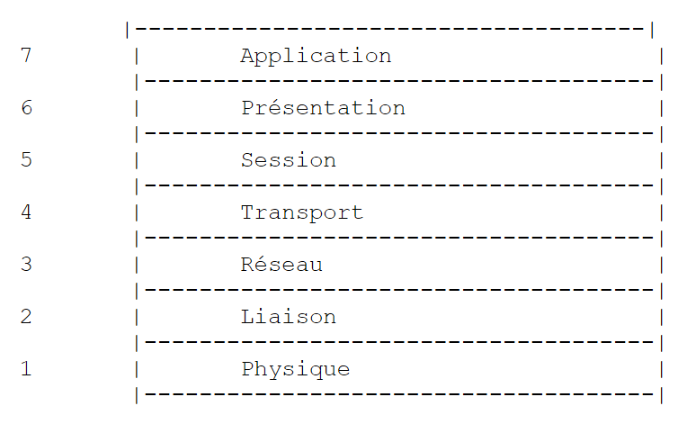 |
每一层从下层接收服务，并向上层提供自身的服务。假设位于不同机器A和B上的两个应用程序想要通信：它们在应用层进行通信。它们无需了解网络运作的所有细节：每个应用程序将希望传输的信息传递给下层——即表示层。 因此，应用程序只需了解与表示层的交互规则。一旦信息进入表示层，就会根据其他规则传递给会话层，依此类推，直到信息到达物理介质并被物理传输到目标机器。在那里，它将经历与发送机器上相反的处理过程。
在每一层，负责发送信息的发送方进程都会将其发送给另一台机器上与其处于同一层的接收方进程。这一过程遵循被称为“层协议”的特定规则。因此，我们得到如下最终通信示意图：
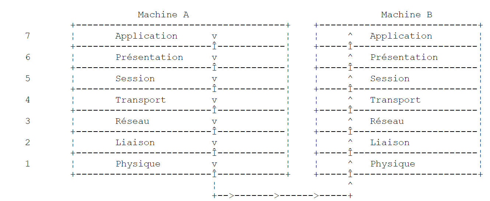 |
各层的作用如下：
确保通过物理介质传输比特。该层包括数据处理终端设备（DPTE），如终端或计算机，以及数据电路终端设备（DCTE），如调制解调器、复用器和集中器。该层的关键点包括： . 信息编码方式的选择（模拟或数字） . 传输模式的选择（同步或异步）。 | |
隐藏物理层的物理特性。检测并纠正传输错误。 | |
管理信息在网络中传输时必须遵循的路径。这被称为路由：确定信息到达目的地必须经过的路线。 | |
实现两个应用程序之间的通信，而前几层仅允许机器之间的通信。该层提供的一项服务是多路复用：传输层可以利用单一网络连接（机器间连接）来传输属于多个应用程序的数据。 | |
该层提供的服务允许应用程序在远程机器上建立并维持一个工作会话。 | |
其目的是标准化不同机器间数据的表示形式。因此，源自机器 A 的数据在通过网络发送之前，会由机器 A 的表示层根据标准格式进行“格式化”。当数据到达目标机器 B 的表示层时，该层将凭借其标准格式识别这些数据，并对其进行重新格式化，以便机器 B 上的应用程序能够识别它们。 | |
在此层级，我们看到的是通常与用户密切相关的应用程序，例如电子邮件或文件传输。 |
2.7.2. TCP/IP模型
OSI模型是一个理想模型。TCP/IP协议套件通过以下方式对其进行近似：
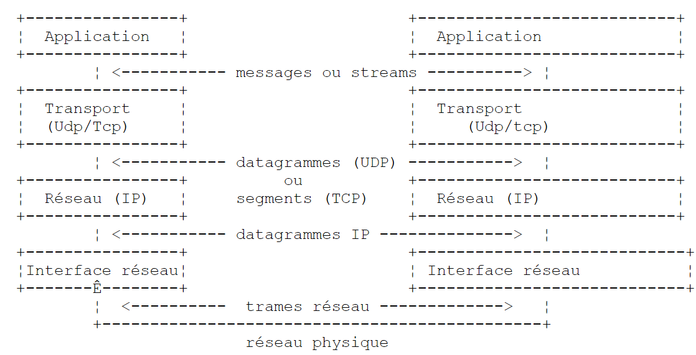 |
- 网络接口（计算机的网卡）执行 OSI 模型第 1 层和第 2 层的功能
- IP（互联网协议）层执行第3层（网络层）的功能
- TCP（传输控制协议）或UDP（用户数据报协议）层执行第4层（传输层）的功能。 TCP协议确保机器之间交换的数据包能够到达目的地。如果未能到达，它会重发丢失的数据包。UDP协议不执行此任务，因此需要由应用程序开发人员来处理。这就是为什么在互联网上——一个并非100%可靠的网络——TCP协议被广泛使用。这种网络被称为TCP/IP网络。
- 应用层涵盖了OSI模型中第5层至第7层的功能。
Web应用程序位于应用层，因此依赖于TCP/IP协议。客户端和服务器机器的应用层之间交换消息，这些消息由模型的第1层至第4层负责路由至目的地。为了相互通信，两台机器的应用层必须“使用”相同的语言或协议。 Web 应用程序使用的协议称为 HTTP（超文本传输协议）。这是一种基于文本的协议，意味着机器通过网络交换文本行来进行通信。这些交换是标准化的，这意味着客户端有一组消息可以精确地告诉服务器它想要什么，而服务器也有一组消息可以向客户端提供响应。这种消息交换采用以下形式：
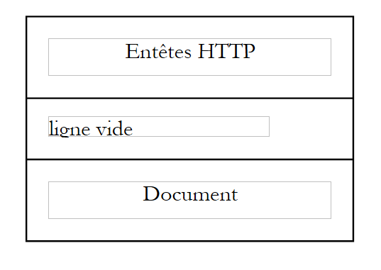 |
客户端 --> 服务器
当客户端向 Web 服务器发出请求时，它会发送
- 行以 HTTP 格式编写的文本，用于指定其需求
- 空行
- 可选的文档
服务器 --> 客户端
当服务器向客户端响应时，它会发送
- 行以 HTTP 格式发送的文本，以表明其正在发送
- 空行
- 可选地，一个文档
因此，双向通信均遵循相同的格式。在两种情况下，都可能发送文档，尽管客户端向服务器发送文档的情况较为罕见。但 HTTP 协议允许这样做。正是这一点使得，例如，ISP 的用户能够将各种文档上传到由该 ISP 托管的个人网站上。交换的文档可以是任何类型。考虑一个浏览器请求包含图像的网页：
- 浏览器连接到 Web 服务器并请求所需的页面。被请求的资源通过 URL（统一资源定位符）进行唯一标识。浏览器仅发送 HTTP 头，而不发送文档。
- 服务器作出响应。它首先发送 HTTP 头部，表明将发送何种类型的响应。如果请求的页面不存在，这可能是错误响应。如果页面存在，服务器将在响应的 HTTP 头部中表明，随后将发送一个 HTML（超文本标记语言）文档。该文档是一系列 HTML 格式的文本行。 HTML文本包含标签（标记），这些标签为浏览器提供了如何显示文本的指令。
- 客户端通过服务器的 HTTP 头得知将收到一个 HTML 文档。它会解析该文档，并可能发现其中包含图像引用。这些图像并未包含在 HTML 文档中。因此，它会向同一台 Web 服务器发出新请求，以获取所需的第一个图像。此请求与步骤 1 中的请求完全相同，只是请求的资源不同。 服务器将处理此请求，向客户端发送所请求的图像。此次，在响应中，HTTP 头部将明确指出所发送的文档是图像而非 HTML 文档。
- 客户端接收并加载所发送的图像。步骤3和4将不断重复，直到客户端（通常是浏览器）获取到显示完整页面所需的所有文档。
2.7.3. HTTP 协议
让我们通过实例来探索 HTTP 协议。浏览器和 Web 服务器之间会交换什么？
2.7.3.1. 来自 HTTP 服务器的响应
在此，我们将探讨 Web 服务器如何响应来自客户端的请求。Web 服务或 HTTP 服务是一种通常运行在 80 端口的 TCP/IP 服务。它也可以运行在其他端口上。在这种情况下，客户端浏览器需要在请求的 URL 中指定该端口。URL 通常遵循以下格式：
其中
协议 | Web 服务的 http。浏览器还可以作为 FTP、新闻、Telnet 及其他服务的客户端。 |
机器 | 托管 Web 服务的机器名称 |
端口 | Web 服务端口。如果端口号为 80，则可以省略。这是最常见的情况 |
路径 | 请求资源的路径 |
info | 提供给服务器的附加信息，用于指定客户端的请求 |
当用户请求加载一个 URL 时，浏览器会做什么？
- 它会与URL中machine[:port]部分指定的机器和端口建立TCP/IP连接。建立TCP/IP连接意味着在两台机器之间创建一条通信“通道”。一旦该通道建立，两台机器之间交换的所有信息都将通过它传输。建立这条TCP/IP通道时，尚不涉及Web的HTTP协议。
- TCP-IP连接建立后，客户端通过发送符合HTTP格式的文本行（命令）向Web服务器发送请求。它将URL中的路径/信息部分发送给服务器
- 服务器将通过同一连接以相同方式进行响应
- 双方中的一方将决定关闭连接。这取决于所使用的HTTP协议。在HTTP 1.0中，服务器会在每次响应后关闭连接。这迫使需要多次请求以获取构成网页的各种文档的客户端，为每次请求都建立新的连接，从而产生额外开销。 在 HTTP/1.1 协议中，客户端可以指示服务器保持连接打开，直到客户端要求关闭连接为止。因此，客户端可以使用单一连接获取网页的所有文档，并在获取最后一个文档后自行关闭连接。服务器将检测到此关闭操作，并随之关闭连接。
为了探索客户端与 Web 服务器之间的交互，我们将使用一个通用的 TCP 客户端。这是一个能够充当任何使用基于文本通信协议（如 HTTP 协议）的服务的客户端的程序。这些文本行将由用户通过键盘输入。这要求用户了解其试图访问的服务的通信协议。 随后，服务器的响应将显示在屏幕上。该程序采用 Java 编写，可在附录中找到。在此，我们将其用于 Windows 系统的 DOS 窗口中，并按以下方式调用：
使用
机器 | 运行待连接服务的机器名称 |
端口 | 提供该服务的端口 |
有了这两项信息，程序将向指定的机器和端口建立 TCP/IP 连接。该连接将用于在客户端和 Web 服务器之间交换文本行。客户端的文本行由用户通过键盘输入并发送至服务器。服务器作为响应返回的文本行则显示在屏幕上。因此，键盘前的用户与 Web 服务器之间可以进行直接对话。 让我们结合前面介绍的示例来尝试一下。我们之前创建了以下静态 HTML 页面：
<html>
<head>
<title>essai 1 : une page statique</title>
</head>
<body>
<center>
<h1>Une page statique...</h1>
</body>
</html>
我们在浏览器中看到的：

我们可以看到，请求的 URL 是：http://localhost:81/essais/essai1.html。因此，Web 服务器正在 localhost（本地计算机）的 81 端口上运行。如果查看此网页的 HTML 源代码（查看/源代码），我们会看到最初创建的 HTML 文本：

现在，让我们使用通用的 TCP 客户端来请求同一个 URL：
Dos>java clientTCPgenerique localhost 81
Commandes :
GET /essais/essai1.html HTTP/1.0
<-- HTTP/1.1 200 OK
<-- Date: Mon, 08 Jul 2002 08:07:46 GMT
<-- Server: Apache/1.3.24 (Win32) PHP/4.2.0
<-- Last-Modified: Mon, 08 Jul 2002 08:00:30 GMT
<-- ETag: "0-a1-3d29469e"
<-- Accept-Ranges: bytes
<-- Content-Length: 161
<-- Connection: close
<-- Content-Type: text/html
<--
<-- <html>
<-- <head>
<-- <title>essai 1 : une page statique</title>
<-- </head>
<-- <body>
<-- <center>
<-- <h1>Une page statique...</h1>
<-- </body>
<-- </html>
当使用命令 java clientTCPgenerique localhost 81 启动客户端时，程序与运行在同一台机器（localhost）81 端口的 Web 服务器之间建立连接。此时，HTTP 格式的客户端-服务器通信即可开始。请注意，这些请求包含三个组成部分：
- HTTP 头部
- 空行
- 可选数据
在本例中，客户端仅发送一个请求：
GET /tests/test1.html HTTP/1.0
这一行包含三个部分：
用于请求资源的 HTTP 命令。还有其他命令： HEAD 用于请求资源，但仅获取服务器响应中的 HTTP 头部信息，不返回资源本身。 PUT 允许客户端向服务器发送文档 | |
请求的资源 | |
使用的 HTTP 协议版本。此处为 1.0。这意味着服务器在发送响应后会立即关闭连接 |
HTTP 头部之后必须始终跟一个空行。客户端在此处就是这样做的。这样客户端或服务器才能知道 HTTP 部分的交换已经完成。在此处，客户端已完成操作，没有文档需要发送。随后开始的是服务器的响应，在本例中，所有以 <-- 符号开头的行均属于响应。它首先发送一系列 HTTP 头部，随后跟一个空行：
<-- HTTP/1.1 200 OK
<-- Date: Mon, 08 Jul 2002 08:07:46 GMT
<-- Server: Apache/1.3.24 (Win32) PHP/4.2.0
<-- Last-Modified: Mon, 08 Jul 2002 08:00:30 GMT
<-- ETag: "0-a1-3d29469e"
<-- Accept-Ranges: bytes
<-- Content-Length: 161
<-- Connection: close
<-- Content-Type: text/html
<--
服务器表示
| |
响应的日期/时间 | |
服务器进行自我标识。此处为 Apache 服务器 | |
客户端请求的资源的最后修改日期 | |
... | |
所发送数据的计量单位。此处为字节 | |
HTTP 头部之后待发送文档的字节数。该数值实际上是文件 essai1.html 的字节大小： | |
服务器表示文档发送完成后将关闭连接 | |
服务器表示将发送HTML格式的文本。 |
客户端接收这些 HTTP 头，现在知道它将收到代表 HTML 文档的 161 字节数据。服务器在表示 HTTP 头结束的空行之后立即发送这 161 字节：
<-- <html>
<-- <head>
<-- <title>essai 1 : une page statique</title>
<-- </head>
<-- <body>
<-- <center>
<-- <h1>Une page statique...</h1>
<-- </body>
<-- </html>
在这里，我们可以识别出最初构建的 HTML 文件。如果我们的客户端是一个浏览器，在收到这些文本行后，它会将其解析并向用户显示以下页面：

让我们再次使用通用的 TCP 客户端来请求同一资源，但这次使用 HEAD 命令，该命令仅请求响应头：
Dos>java.bat clientTCPgenerique localhost 81
Commandes :
HEAD /essais/essai1.html HTTP/1.1
Host: localhost:81
<-- HTTP/1.1 200 OK
<-- Date: Mon, 08 Jul 2002 09:07:25 GMT
<-- Server: Apache/1.3.24 (Win32) PHP/4.2.0
<-- Last-Modified: Mon, 08 Jul 2002 08:00:30 GMT
<-- ETag: "0-a1-3d29469e"
<-- Accept-Ranges: bytes
<-- Content-Length: 161
<-- Content-Type: text/html
<--
我们得到了与之前相同的结果，只是没有HTML文档。请注意，在HEAD请求中，客户端表明其使用的是HTTP 1.1版本。这要求它发送第二个HTTP头，指定客户端想要查询的机器:端口对：Host: localhost:81。
现在，让我们分别使用浏览器和通用 TCP 客户端请求一张图片。首先，使用浏览器：
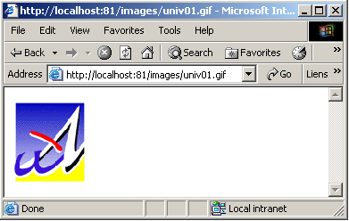
文件 univ01.gif 大小为 3167 字节：
现在让我们使用通用的 TCP 客户端：
E:\data\serge\JAVA\SOCKETS\client générique>java clientTCPgenerique localhost 81
Commandes :
HEAD /images/univ01.gif HTTP/1.1
host: localhost:81
<-- HTTP/1.1 200 OK
<-- Date: Tue, 09 Jul 2002 13:53:24 GMT
<-- Server: Apache/1.3.24 (Win32) PHP/4.2.0
<-- Last-Modified: Fri, 14 Apr 2000 11:37:42 GMT
<-- ETag: "0-c5f-38f70306"
<-- Accept-Ranges: bytes
<-- Content-Length: 3167
<-- Content-Type: image/gif
<--
请注意服务器响应中的以下几点：
| |
| |
|
2.7.3.2. HTTP客户端的请求
现在，让我们思考以下问题：如果我们要编写一个能与 Web 服务器“对话”的程序，它必须向 Web 服务器发送哪些命令才能获取给定的资源？我们在之前的示例中已经开始回答这个问题。我们遇到了三种命令：
| |
| |
|
还有其他命令。为了探索这些命令，我们将使用一个通用的 TCP 服务器。这是一个用 Java 编写的程序，您也可以在附录中找到它。它通过以下命令启动：java genericTCPserver listeningPort，其中 listeningPort 是客户端必须连接的端口。genericTCPserver 程序
- 会在屏幕上显示客户端发送的命令
- 并将用户在键盘上输入的文本行作为响应发送给客户端。因此，用户实际上充当了服务器的角色。在本例中，键盘前的用户将扮演 Web 服务的角色。
现在，让我们通过在 88 端口上启动我们的通用服务器来模拟一个 Web 服务器：
Dos> java serveurTCPgenerique 88
Serveur générique lancé sur le port 88
现在，让我们打开浏览器并访问 URL http://localhost:88/exemple.html。浏览器将连接到本地主机的 88 端口，并请求 /example.html 页面：

现在让我们看看服务器窗口，它显示了客户端发送的内容（为简化起见，已省略了与 serveurTCPgenerique 程序运行相关的部分行）：
Dos>java serveurTCPgenerique 88
Serveur générique lancé sur le port 88
...
<-- GET /exemple.html HTTP/1.1
<-- Accept: image/gif, image/x-xbitmap, image/jpeg, image/pjpeg, application/msword, */*
<-- Accept-Language: fr
<-- Accept-Encoding: gzip, deflate
<-- User-Agent: Mozilla/4.0 (compatible; MSIE 6.0; Windows NT 5.0; .NET CLR 1.0.3705; .NET CLR 1.0.2 914)
<-- Host: localhost:88
<-- Connection: Keep-Alive
<--
以 <-- 符号开头的行是客户端发送的。这揭示了我们尚未遇到的 HTTP 头部：
| |
| |
| |
| |
|
如预期所示，浏览器发送的 HTTP 头部以空行结尾。
现在，让我们为客户端构建一个响应。此时，操作键盘的用户就是实际的服务器，可以手动编写响应。回顾前一个示例中 Web 服务器发送的响应：
<-- HTTP/1.1 200 OK
<-- Date: Mon, 08 Jul 2002 08:07:46 GMT
<-- Server: Apache/1.3.24 (Win32) PHP/4.2.0
<-- Last-Modified: Mon, 08 Jul 2002 08:00:30 GMT
<-- ETag: "0-a1-3d29469e"
<-- Accept-Ranges: bytes
<-- Content-Length: 161
<-- Connection: close
<-- Content-Type: text/html
<--
<-- <html>
<-- <head>
<-- <title>essai 1 : une page statique</title>
<-- </head>
<-- <body>
<-- <center>
<-- <h1>Une page statique...</h1>
<-- </body>
<-- </html>
让我们尝试手动（通过键盘）创建一个类似的响应。以 --> : 开头的行将发送给客户端：
...
<-- Host: localhost:88
<-- Connection: Keep-Alive
<--
--> : HTTP/1.1 200 OK
--> : Server: serveur tcp generique
--> : Connection: close
--> : Content-Type: text/html
--> :
--> : <html>
--> : <head><title>Serveur generique</title></head>
--> : <body>
--> : <center>
--> : <h2>Reponse du serveur generique</h2>
--> : </center>
--> : </body>
--> : </html>
fin
end 命令是 serverTCPgenerique 程序特有的操作。它会停止程序的运行，并关闭服务器与客户端之间的连接。在我们的响应中，我们仅使用了以下 HTTP 头部：
HTTP/1.1 200 OK
--> : Server: serveur tcp generique
--> : Connection: close
--> : Content-Type: text/html
--> :
我们没有指定要发送的文件大小（Content-Length），而是简单地表明在发送完成后将关闭连接（Connection: close）。这对浏览器来说已经足够了。当浏览器看到连接已关闭时，它就会知道服务器的响应已经完成，并会显示收到的 HTML 页面。该页面如下所示：
--> : <html>
--> : <head><title>Serveur generique</title></head>
--> : <body>
--> : <center>
--> : <h2>Reponse du serveur generique</h2>
--> : </center>
--> : </body>
--> : </html>
随后浏览器将显示以下页面：

如果您点击上方的“查看源代码”以查看浏览器接收的内容，您将看到：

也就是说，这正是通用服务器发送的内容。
2.8. HTML
网页浏览器可以显示各种文档，其中最常见的是 HTML（超文本标记语言）文档。这些文档由使用 <tag>text</tag> 形式的标签进行格式化的文本组成。因此，文本 <B>important</B> 将以粗体显示“important”一词。还有一些独立标签，例如 <hr> 标签，它会显示一条水平线。我们不会逐一介绍 HTML 文本中所有可能出现的标签。 有许多所见即所得（WYSIWYG）软件，允许您无需编写任何 HTML 代码即可构建网页。这些工具会自动为使用鼠标和预定义控件创建的布局生成 HTML 代码。因此，您可以（使用鼠标）将表格插入页面，然后查看软件生成的 HTML 代码，从而了解在网页上定义表格应使用的标签。就是这么简单。 此外，掌握 HTML 知识至关重要，因为动态 Web 应用程序必须自行生成 HTML 代码并发送给 Web 客户端。该代码是通过编程方式生成的，而您当然必须清楚该生成什么内容，才能确保客户端收到他们想要的网页。
总而言之，您无需精通整个HTML语言即可开始网页编程。不过，掌握这些知识是必要的，且可以通过使用Word、FrontPage、DreamWeaver等数十种所见即所得（WYSIWYG）网页编辑器来获取。探索HTML奥秘的另一种方法是浏览网页，查看那些包含您未曾接触过的有趣元素的页面源代码。
2.8.1. 示例
请看以下示例，它使用FrontPage Express（Internet Explorer自带的免费工具）创建。此处已简化了FrontPage生成的代码。该示例包含网页文档中常见的一些元素，例如：
- 一个表格
- 一张图片
- 一个链接

HTML 文档通常具有以下形式：
整个文档被包含在 <html>...</html> 标签之间。它由两部分组成：
- <head>...</head>：这是文档中不可见的部分。它向将显示该文档的浏览器提供信息。该部分通常包含 <title>...</title> 标签，用于指定将在浏览器标题栏中显示的文本。 该部分还可能包含其他标签，包括定义文档关键词的标签，这些关键词随后会被搜索引擎使用。该部分还可能包含脚本，通常采用 JavaScript 或 VBScript 编写，这些脚本将由浏览器执行。
- <body attributes>...</body>：这是浏览器将显示的部分。该部分包含的 HTML 标签向浏览器说明了文档的“预期”视觉布局。每种浏览器对这些标签的解释方式各不相同。因此，两款浏览器可能以不同的方式显示同一个网页文档。这通常是网页设计师面临的挑战之一。
本示例文档的 HTML 代码如下：
<html>
<head>
<title>balises</title>
</head>
<body background="/images/standard.jpg">
<center>
<h1>Les balises HTML</h1>
<hr>
</center>
<table border="1">
<tr>
<td>cellule(1,1)</td>
<td valign="middle" align="center" width="150">cellule(1,2)</td>
<td>cellule(1,3)</td>
</tr>
<tr>
<td>cellule(2,1)</td>
<td>cellule(2,2)</td>
<td>cellule(2,3</td>
</tr>
</table>
<table border="0">
<tr>
<td>Une image</td>
<td><img border="0" src="/images/univ01.gif" width="80" height="95"></td>
</tr>
<tr>
<td>le site de l'ISTIA</td>
<td><a href="http://istia.univ-angers.fr">ici</a></td>
</tr>
</table>
</body>
</html>
代码中仅突出显示了我们感兴趣的部分：
HTML | 标签和HTML示例 |
<title>标签</title> 当文档显示时，这些标签会出现在浏览器的标题栏中 | |
<hr>：显示一条水平线 | |
<table attributes>....</table>：用于定义表格 <tr attributes>...</tr>：用于定义一行 <td attributes>...</td>：用于定义单元格 示例： <table border="1">...</table>：border 属性定义表格边框的粗细 <td valign="middle" align="center" width="150">单元格(1,2)</td>：定义一个内容为单元格(1,2)的单元格。该内容将垂直居中（valign="middle"）和水平居中（align="center"）。该单元格的宽度为 150 像素（width="150"） | |
<img border="0" src="/images/univ01.gif" width="80" height="95">：定义了一张无边框（border="0"）的图片， 高度为 95 像素（height="95"），宽度为 80 像素（width="80"），其源文件位于 Web 服务器上的 /images/univ01.gif（src="/images/univ01.gif"）。该链接位于可通过 URL http://localhost:81/html/balises.htm 访问的 Web 文档中。 因此，浏览器将请求 URL http://localhost:81/images/univ01.gif 以获取此处引用的图像。 | |
<a href="http://istia.univ-angers.fr">here</a>: 将文本“here”设置为指向 URL http://istia.univ-angers.fr 的链接。 | |
<body background="/images/standard.jpg">：表示用作页面背景的图像位于 Web 服务器上的 URL /images/standard.jpg。在本示例中，浏览器将请求 URL http://localhost:81/images/standard.jpg 以获取此背景图像。 |
在这个简单示例中，我们可以看到，为了构建整个文档，浏览器必须向服务器发出三次请求：
- http://localhost:81/html/balises.htm 以获取文档的 HTML 源代码
- http://localhost:81/images/univ01.gif 用于获取图片 univ01.gif
- http://localhost:81/images/standard.jpg 用于获取背景图片 standard.jpg
以下示例展示了一个同样使用 FrontPage 创建的 Web 表单。

FrontPage 生成的 HTML 代码经过轻微整理后如下所示：
<html>
<head>
<title>balises</title>
<script language="JavaScript">
function effacer(){
alert("Vous avez cliqué sur le bouton Effacer");
}//effacer
</script>
</head>
<body background="/images/standard.jpg">
<form method="POST" >
<table border="0">
<tr>
<td>Etes-vous marié(e)</td>
<td>
<input type="radio" value="Oui" name="R1">Oui
<input type="radio" name="R1" value="non" checked>Non
</td>
</tr>
<tr>
<td>Cases à cocher</td>
<td>
<input type="checkbox" name="C1" value="un">1
<input type="checkbox" name="C2" value="deux" checked>2
<input type="checkbox" name="C3" value="trois">3
</td>
</tr>
<tr>
<td>Champ de saisie</td>
<td>
<input type="text" name="txtSaisie" size="20" value="qqs mots">
</td>
</tr>
<tr>
<td>Mot de passe</td>
<td>
<input type="password" name="txtMdp" size="20" value="unMotDePasse">
</td>
</tr>
<tr>
<td>Boîte de saisie</td>
<td>
<textarea rows="2" name="areaSaisie" cols="20">
ligne1
ligne2
ligne3
</textarea>
</td>
</tr>
<tr>
<td>combo</td>
<td>
<select size="1" name="cmbValeurs">
<option>choix1</option>
<option selected>choix2</option>
<option>choix3</option>
</select>
</td>
</tr>
<tr>
<td>liste à choix simple</td>
<td>
<select size="3" name="lst1">
<option selected>liste1</option>
<option>liste2</option>
<option>liste3</option>
<option>liste4</option>
<option>liste5</option>
</select>
</td>
</tr>
<tr>
<td>liste à choix multiple</td>
<td>
<select size="3" name="lst2" multiple>
<option>liste1</option>
<option>liste2</option>
<option selected>liste3</option>
<option>liste4</option>
<option>liste5</option>
</select>
</td>
</tr>
<tr>
<td>bouton</td>
<td>
<input type="button" value="Effacer" name="cmdEffacer" onclick="effacer()">
</td>
</tr>
<tr>
<td>envoyer</td>
<td>
<input type="submit" value="Envoyer" name="cmdRenvoyer">
</td>
</tr>
<tr>
<td>rétablir</td>
<td>
<input type="reset" value="Rétablir" name="cmdRétablir">
</td>
</tr>
</table>
<input type="hidden" name="secret" value="uneValeur">
</form>
</body>
</html>
<--> 与 HTML 标签之间的视觉关联如下：
视觉 | HTML 标签 |
<form method="POST" > | |
<input type="text" name="txtInput" size="20" value="几句话"> | |
<input type="password" name="txtPassword" size="20" value="aPassword"> | |
<textarea rows="2" name="inputArea" cols="20"> 第1行 第2行 第3行 </textarea> | |
<input type="radio" value="是" name="R1">是 <input type="radio" name="R1" value="No" checked>否 | |
<input type="checkbox" name="C1" value="one">1 <input type="checkbox" name="C2" value="two" checked>2 <input type="checkbox" name="C3" value="three">3 | |
<select size="1" name="cmbValues"> <option>选项1</option> <option selected>选项2</option> <option>选项3</option> </select> | |
<select size="3" name="lst1"> <option selected>list1</option> <option>列表2</option> <option>列表3</option> <option>列表4</option> <option>列表5</option> </select> | |
<select size="3" name="lst2" multiple> <option>列表1</option> <option>列表2</option> <option selected>list3</option> <option>列表4</option> <option>列表5</option> </select> | |
<input type="submit" value="提交" name="cmdSubmit"> | |
<input type="reset" value="重置" name="cmdReset"> | |
<input type="button" value="清除" name="cmdClear" onclick="clear()"> |
让我们回顾一下这些不同的控件。
2.8.1.1. 该
<form method="POST" > |
<form name="..." method="..." action="...">...</form> | |
name="exampleform"：表单名称 method="..."：浏览器用于将表单中收集的值发送至 Web 服务器的方法 action="..."：表单中收集的值将被发送到的 URL。 Web表单由<form>...</form>标签包围。表单可以有一个名称（name="xx"）。这适用于表单内的所有控件。如果Web文档中包含需要引用表单元素的脚本，此名称将非常有用。表单的目的是收集用户通过键盘或鼠标输入的信息，并将其发送至Web服务器URL。哪个URL？即action="URL"属性中引用的那个。 如果缺少该属性，信息将发送至包含该表单的文档的 URL。上例即属于这种情况。迄今为止，我们一直将 Web 客户端视为向 Web 服务器“请求”信息，从未将其视为向 Web 服务器“提供”信息。Web 客户端如何将信息（表单中包含的数据）提供给 Web 服务器？ 我们稍后将详细讨论这一点。它可以使用两种不同的方法：POST 和 GET。<form> 标签中的 method="method" 属性（其中 method 可以是 GET 或 POST）会告诉浏览器，应使用哪种方法将表单中收集的信息发送至 action="URL" 属性指定的 URL。当未指定 method 属性时，默认使用 GET 方法。 |
2.8.1.2. 输入字段


<input type="text" name="txtInput" size="20" value="一些文字"> <input type="password" name="txtMdp" size="20" value="aPassword"> |
<input type="..." name="..." size=".." value=".."> `input` 标签可用于各种控件。`type` 属性用于区分这些不同的控件。 | |
type="text"：指定这是一个文本输入框 type="password"：输入字段中的字符将被星号 (*) 替换。这是它与普通输入字段的唯一区别。此类控件适用于输入密码。 size="20"：字段中显示的字符数——不会阻止输入更多字符 name="txtInput"：控件的名称 value="some words"：将在输入框中显示的文本。 |
2.8.1.3. 多行输入框
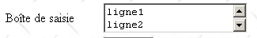
<textarea rows="2" name="areaSaisie" cols="20"> 第1行 第2行 第3行 </textarea> |
<textarea ...>文本</textarea> 显示一个多行文本输入框，其中已包含文本 | |
rows="2"：行数 cols="'20" : 列数 name="areaSaisie"：控件名称 |
2.8.1.4. 单选按钮

<input type="radio" value="是" name="R1">是 <input type="radio" name="R1" value="no" checked>否 |
<input type="radio" attribute2="value2" ....>文本 显示一个单选按钮，其旁边带有文本。 | |
name="radio"：控件的名称。名称相同的单选按钮构成一组互斥按钮：其中只能选中一个。 value="value"：分配给单选按钮的值。请勿将此值与单选按钮旁显示的文本混淆。该文本仅用于显示目的。 checked：如果存在此关键字，则单选按钮处于选中状态；否则，则未选中。 |
2.8.1.5. 复选框
<input type="checkbox" name="C1" value="one">1 <input type="checkbox" name="C2" value="two" checked>2 <input type="checkbox" name="C3" value="three">3 |
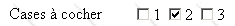
<input type="checkbox" attribute2="value2" ....>文本 显示一个复选框，旁边带有文本。 | |
name="C1"：控件的名称。复选框的名称可以相同，也可以不同。名称相同的复选框构成一组关联的复选框。 value="value"：分配给复选框的值。请勿将此值与复选框旁显示的文本混淆。该文本仅用于显示目的。 checked：如果存在此关键字，则单选按钮处于选中状态；否则，则未选中。 |
2.8.1.6. 下拉列表（组合框）
<select size="1" name="cmbValues"> <option>选项1</option> <option selected>选项2</option> <option>选项3</option> </select> |

<select size=".." name=".."> <option [selected]>...</option> ... </select> 在列表中显示位于 <option>...</option> 标签之间的文本 | |
name="cmbValeurs"：控件名称。 size="1"：可见列表项的数量。size="1" 使列表像下拉列表框一样工作。 selected：如果列表项中存在此关键字，该项将在列表中显示为已选中。在上例中，列表项 choice2 在首次显示时会作为已选中项出现在下拉列表中。 |
2.8.1.7. 单选列表
<select size="3" name="lst1"> <option selected>list1</option> <option>列表2</option> <option>列表3</option> <option>列表4</option> <option>列表5</option> </select> |

<select size=".." name=".."> <option [selected]>...</option> ... </select> 在列表中显示位于 <option>...</option> 标签之间的文本 | |
与仅显示一个项的下拉列表相同。该控件与前一个下拉列表的唯一区别在于其 size>1 属性。 |
2.8.1.8. 多选列表
<select size="3" name="lst2" multiple> <option selected>list1</option> <option>列表2</option> <option selected>列表3</option> <option>列表4</option> <option>列表5</option> </select> |

<select size=".." name=".." multiple> <option [selected]>...</option> ... </select> 在列表中显示位于 <option>...</option> 标签之间的文本 | |
multiple：允许从列表中选择多个项目。在上例中，list1和list3这两个项目都被选中。 |
2.8.1.9. 按钮
<input type="button" value="清除" name="cmdClear" onclick="clear()"> |

<input type="button" value="..." name="..." onclick="clear()" ....> | |
type="button"：定义一个按钮控件。还有另外两种类型的按钮：submit 和 reset。 value="清除"：按钮上显示的文本 onclick="function()"：允许您定义一个函数，当用户点击按钮时执行该函数。该函数是显示的网页文档中定义的脚本的一部分。上述语法是 JavaScript 语法。如果脚本使用 VBScript 编写，则应写为 onclick="function"，不带圆括号。 如果需要向函数传递参数，语法保持不变：onclick="function(val1, val2,...)" 在本示例中，点击“清除”按钮将调用以下 JavaScript clear 函数：
clear 函数会显示一条消息：  |
2.8.1.10. 提交按钮
<input type="submit" value="发送" name="cmdSend"> |

<input type="submit" value="发送" name="cmdRenvoyer"> | |
type="submit"：将该按钮定义为向 Web 服务器发送表单数据的按钮。当用户点击此按钮时，浏览器将使用 <form> 标签中 method 属性定义的方法，将表单数据发送至 action 属性中定义的 URL。 value="提交"：按钮上显示的文本 |
2.8.1.11. 重置按钮
<input type="reset" value="重置" name="cmdReset"> |

<input type="reset" value="重置" name="cmdReset"> | |
type="reset"：将该按钮定义为表单重置按钮。当用户点击此按钮时，浏览器将把表单恢复到接收时的状态。 value="重置"：按钮上显示的文本 |
2.8.1.12. 隐藏字段
<input type="hidden" name="secret" value="aValue"> |
<input type="hidden" name="..." value="..."> | |
type="hidden"：指定这是一个隐藏字段。隐藏字段是表单的一部分，但不会显示给用户。不过，如果用户要求浏览器显示源代码，他们会看到 <input type="hidden" value="..."> 标签的存在，从而得知该隐藏字段的值。 value="aValue"：隐藏字段的值。 隐藏字段的用途是什么？它允许 Web 服务器在客户端的多次请求之间保留信息。以一个在线购物应用程序为例。客户在商品目录的第一页购买了 q1 件商品 art1，然后转到目录中的新页面。为了记住客户购买了 q1 件 art1，服务器可以在新页面上的 Web 表单中将这两条信息放入一个隐藏字段中。 在此新页面上，客户端购买了 q2 件商品 art2。当第二个表单的数据提交至服务器时，服务器不仅会收到 (q2,art2) 信息，还会收到 (q1,art1) 信息——后者作为表单中的隐藏字段，用户无法对其进行修改。 随后，Web 服务器将把信息 (q1,art1) 和 (q2,art2) 放入一个新的隐藏字段中，并发送新的目录页面。以此类推。 |
2.8.2. Web客户端向Web服务器发送表单值
我们在上一课中提到，Web 客户端有两种方法将已显示表单的值发送给 Web 服务器：GET 和 POST 方法。让我们通过一个示例来看看这两种方法的区别。我们将重新审视之前的示例，并按以下方式处理：
- 浏览器向 Web 服务器请求示例的 URL
- 获取表单后，我们填写表单
- 在点击“提交”按钮将表单值发送至 Web 服务器之前，我们将停止 Web 服务器，并用之前使用的通用 TCP 服务器代替它。请记住，该服务器会将 Web 客户端发送给它的文本行显示在屏幕上。这样，我们就能清楚地看到浏览器发送了什么内容。
表单的填写方式如下：

本文档使用的 URL 如下：
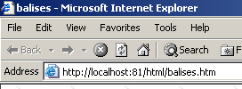
2.8.2.1. GET 方法
该 HTML 文档经过编程，使浏览器使用 GET 方法将表单值发送至 Web 服务器。因此，我们编写了以下代码：
我们停止 Web 服务器，并在 81 端口上启动我们的通用 TCP 服务器：
E:\data\serge\JAVA\SOCKETS\serveur générique>java serveurTCPgenerique 81
Serveur générique lancé sur le port 81
现在，让我们回到浏览器，使用“提交”按钮将表单数据发送至 Web 服务器：

以下是通用 TCP 服务器接收到的内容：
<-- GET /html/balises.htm?R1=Oui&C1=un&C2=deux&txtSaisie=programmation+web&txtMdp=ceciestsecret&area
Saisie=les+bases+de+la%0D%0Aprogrammation+web&cmbValeurs=choix3&lst1=liste3&lst2=liste1&lst2=liste3&
cmdRenvoyer=Envoyer&secret=uneValeur HTTP/1.1
<-- Accept: image/gif, image/x-xbitmap, image/jpeg, image/pjpeg, application/msword, application/vnd
.ms-powerpoint, application/vnd.ms-excel, */*
<-- Referer: http://localhost:81/html/balises.htm
<-- Accept-Language: fr
<-- Accept-Encoding: gzip, deflate
<-- User-Agent: Mozilla/4.0 (compatible; MSIE 6.0; Windows NT 5.0; .NET CLR 1.0.3705)
<-- Host: localhost:81
<-- Connection: Keep-Alive
<--
这一切都体现在浏览器发送的第一个 HTTP 头部中：
<-- GET /html/balises.htm?R1=Oui&C1=un&C2=deux&txtSaisie=programmation+web&txtMdp=ceciestsecret&area
Saisie=les+bases+de+la%0D%0Aprogrammation+web&cmbValeurs=choix3&lst1=liste3&lst2=liste1&lst2=liste3&
cmdRenvoyer=Envoyer&secret=uneValeur HTTP/1.1
我们可以看到，这比我们迄今为止遇到的要复杂得多。它使用了 GET HTTP/1.1 URL 语法，但形式有所不同：GET URL?param1=value1¶m2=value2&... HTTP/1.1，其中参数是 Web 表单控件的名称，值则是与之关联的数值。让我们更仔细地分析一下。下面是一个三列表格：
- 第 1 列：显示示例中 HTML 控件的定义
- 第 2 列：展示该控件在浏览器中的显示效果
- 第 3 列：展示浏览器针对第 1 列中的控件向服务器发送的值，采用示例中 GET 请求所采用的格式
HTML控件 | 可视化 | 返回值 |
<input type="radio" value="Yes" name="R1">是 <input type="radio" name="R1" value="no" checked>否 | - 用户所选单选按钮的 value 属性的值。 | |
<input type="checkbox" name="C1" value="one">1 <input type="checkbox" name="C2" value="two" checked>2 <input type="checkbox" name="C3" value="three">3 | 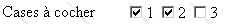 | C1=one C2=two - 用户选中的复选框的 value 属性的值 |
<input type="text" name="txtInput" size="20" value="几句话"> | txtInput=web+programming - 用户在输入框中输入的文本。空格已被替换为 + 号 | |
<input type="password" name="txtMdp" size="20" value="aPassword"> | txtPassword=thisIsSecret - 用户在输入框中输入的文本 | |
<textarea rows="2" name="inputArea" cols="20"> line1 第2行 第3行 </textarea> | 输入字段=Web编程基础%0D%0A Web+编程 - 用户在输入字段中输入的文本。%OD%OA 是换行标记。空格已被 + 号替换 | |
<select size="1" name="cmbValeurs"> <option>选项1</option> <option selected>选项2</option> <option>选项3</option> </select> | cmbValues=dropdown3 - 用户从单选列表中选中的值 | |
<select size="3" name="lst1"> <option selected>list1</option> <option>list2</option> <option>列表3</option> <option>列表4</option> <option>列表5</option> </select> |  | lst1=list3 - 用户从单选列表中选择的值 |
<select size="3" name="lst2" multiple> <选中项>列表1</option> <option>列表2</option> <option selected>列表3</option> <option>列表4</option> <option>列表5</option> </select> |  | lst2=list1 lst2=list3 - 用户从多选列表中选定的值 |
<input type="submit" value="提交" name="cmdSubmit"> | cmdSubmit=提交 - 用于将表单数据发送至服务器的按钮的 name 和 value 属性 | |
<input type="hidden" name="secret" value="aValue"> | secret=aValue - 隐藏字段的 value 属性 |
我们再做一次同样的操作，但这次让 Web 服务器生成响应，看看结果如何。Web 服务器返回的页面如下：

它与表单填写前最初收到的页面完全相同。要理解其中的原因，我们需要再次查看用户点击“提交”按钮时浏览器请求的 URL：
<-- GET /html/balises.htm?R1=Oui&C1=un&C2=deux&txtSaisie=programmation+web&txtMdp=ceciestsecret&area
Saisie=les+bases+de+la%0D%0Aprogrammation+web&cmbValeurs=choix3&lst1=liste3&lst2=liste1&lst2=liste3&
cmdRenvoyer=Envoyer&secret=uneValeur HTTP/1.1
请求的 URL 是 /html/tags.htm。我们还将表单值传递给此 URL。目前，作为静态页面的 URL /html/tags.htm 并未使用这些值。因此，前面的 GET 请求等同于
，这也是服务器再次向我们发送初始页面的原因。请注意，浏览器确实显示了请求的完整 URL：

2.8.2.2. POST 方法
HTML文档经过编程，使得浏览器现在使用POST方法将表单值发送给Web服务器：
我们停止 Web 服务器，并在 81 端口上启动通用 TCP 服务器（我们之前见过该服务器，但为达到此目的对其进行了微调）：
E:\data\serge\JAVA\SOCKETS\serveur générique>java serveurTCPgenerique2 81
Serveur générique lancé sur le port 81
现在，我们回到浏览器，使用“提交”按钮将表单数据发送至 Web 服务器：
以下是通用 TCP 服务器接收到的内容：
<-- POST /html/balises.htm HTTP/1.1
<-- Accept: image/gif, image/x-xbitmap, image/jpeg, image/pjpeg, application/msword, application/vnd
.ms-powerpoint, application/vnd.ms-excel, */*
<-- Referer: http://localhost:81/html/balises.htm
<-- Accept-Language: fr
<-- Content-Type: application/x-www-form-urlencoded
<-- Accept-Encoding: gzip, deflate
<-- User-Agent: Mozilla/4.0 (compatible; MSIE 6.0; Windows NT 5.0; .NET CLR 1.0.3705)
<-- Host: localhost:81
<-- Content-Length: 210
<-- Connection: Keep-Alive
<-- Cache-Control: no-cache
<--
<-- R1=Oui&C1=un&C2=deux&txtSaisie=programmation+web&txtMdp=ceciestsecret&areaSaisie=les+bases+de+la%0D%0Aprogrammation+web&cmbValeurs=choix3&lst1=liste3&lst2=liste1&lst2=liste3&cmdRenvoyer=Envoyer&secret=uneValeur
与我们已知的相比，我们注意到浏览器请求中出现了以下变化：
- 初始的 HTTP 头部不再是 GET，而是 POST。其语法为 POST HTTP/1.1 URL，其中 URL 是浏览器请求的 URL。同时，POST 表示浏览器有数据需要发送给服务器。
- Content-Type: application/x-www-form-urlencoded 头部指定了浏览器将发送的数据类型。该数据由经过 URL 编码的表单数据（x-www-form）组成。这种编码确保传输数据中的某些字符被转换，以防止服务器误解它们。因此，空格被替换为 +，换行符被替换为 %OD%OA，以此类推。 通常，数据中所有可能被服务器误解的字符（如 &、+、% 等）都会被转换为 %XX，其中 XX 代表其十六进制代码。
- 行“Content-Length: 210”告知服务器，在 HTTP 头部完成后（即在表示头部结束的空行之后），客户端将发送多少个字符。
- 数据（210 个字符）： R1=Yes&C1=one&C2=two&txtInput=web+programming&txtPassword=thisissecret&areaInput=the+basics+of+web%0D%0Aweb+programming&cmbValues=choice3&lst1=list3&lst2=list1&lst2=list3&cmdSubmit=Submit&secret=aValue
请注意，通过 POST 发送的数据与通过 GET 发送的数据格式相同。
哪种方法更好？我们已经看到，如果表单的值由浏览器使用 GET 方法发送，浏览器会在地址栏中显示请求的 URL，格式为 URL?param1=val1¶m2=val2&.... 这既可以被视为优点，也可以被视为缺点：
- 如果你希望允许用户将这个带参数的 URL 保存到书签中，这便是一个优势
- 若您不希望用户访问某些表单信息（如隐藏字段），则属于缺点
从现在起，我们在表单中将几乎完全使用 POST 方法。
2.8.2.3. 从 Web 表单中获取值
客户端请求的静态页面，即使通过 POST 或 GET 发送了参数，也无法以任何方式检索这些参数。只有程序才能做到这一点，而程序随后会向客户端生成响应——这种响应是动态的，通常基于接收到的参数。这就是 Web 编程的领域，我们将在下一章中结合 Java Web 编程技术（Servlet 和 JSP 页面）的介绍，对此进行更详细的探讨。